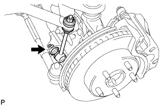

BỘ GIẢM CHẤN TRƯỚC VỚI LÒ XO TRỤ > THÁO |
| 1. THÁO BÁNH TRƯỚC |
| 2. THÁO CỤM THANH NỐI THANH ỔN ĐỊNH TRƯỚC TRÁI |
|  |
Tháo đai ốc và ngắt thanh nối thanh ổn định ra khỏi đòn treo dưới.
| 3. THÁO CỤM THANH NỐI THANH ỔN ĐỊNH TRƯỚC PHẢI |
| 4. THÁO GIÁ BẮT THANH ỔN ĐỊNH PHÍA TRƯỚC |
Tháo giá bắt thanh ổn định phía trước (Xem trang Kích chuột vào đây).
| 5. THÁO THANH ỔN ĐỊNH PHÍA TRƯỚC |
Tháo thanh ổn định phía trước (Xem trang Kích chuột vào đây).
| 6. THÁO BỘ GIẢM CHẤN TRƯỚC VÀ LÒ XO TRỤ |
 |
Tháo đai ốc và bu lông.
 |
Tháo 3 đai ốc và bộ giảm chấn cùng với lò xo trụ.